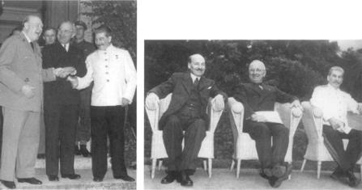

Churchıll, Truman ve Stalin Clement Attlee, Truman ve Stalin
Potsdam’da, 1945 Potsdam’da, Ağustos 1945
Musa gibi Franklin Delano Roosevelt de Vadedilen Topraklar’ı gördü; fakat bu topraklar ona verilmedi. Öldüğü zaman, Müttefik orduları derinlemesine Almanya’nın içlerinde idiler ve Japonya’nın Müttefikler tarafından planlanan işgaline bir başlangıç olmak üzere yapılan Okinawa Savaşı henüz başlamıştı.
Roosevelt’in 12 Nisan 1945 tarihindeki ölümü beklenmeyen bir şey değildi. Ocakta, hastasının ani tansiyon değişikliklerinden korkuya kapılan Roosevelt’in doktoru, hastasının ancak gerginlikten kaçınırsa yaşayabileceği sonucuna vardı. Başkanlık makamının baskıları göz önüne alındığında, doktorun değerlendirmesi ölüm fermanı gibi bir şeydi.{554} Etrafı çevrilmiş Berlin’de, Hitler ve Goebbels Alman tarih kitaplarında anlatılan Brandenburg Sarayı mucizesinin tekrar edeceğine kendilerini neredeyse inandırmışlardı. Yedi Yıl Savaşları sırasında, Rus orduları Berlin kapılarında iken, Rus Çarı’nın ani ölümü ve dost bir çarın yerine geçmesi, Büyük Frederick’i kurtarmıştı. Fakat tarih 1945’te tekerrür etmedi. Nazi suçları en azından bir tek sarsılmaz ortak amaç sağlamıştı: Nazizm belasını ortadan kaldırmak.
Nazi Almanya’sının çöküşü ve bunun sonucunda ortaya çıkan güç boşluğunun doldurulması gereksinimi, savaş ortaklığının dağılmasına neden oldu. Müttefik-ler’in amaçları çok farklıydı. Churchill, Sovyetler Birliği’nin Orta Avrupa’yı hegemonyası altına almasını önlemek peşinde idi. Stalin, Sovyet askeri zaferleri ve Rus halkının çektiği acıların karşılığının toprak şeklinde ödenmesini istiyordu. Yeni başkan Harry S. Truman, başlangıçta Roosevelt’in miras bıraktığı ittifakın devamı için çaba harcadı. Başkanlık döneminin sonunda, savaş zamanı uyumlu çalışmasından hiçbir iz yoktu. Dünyanın iki ucundaki iki dev, ABD ve Sovyetler Birliği şimdi Avrupa’nın tam göbeğinde karşı karşıyaydılar.
Harry S. Truman’ın geçmişi, büyük selefininkinden tamamen farklıydı. Roosevelt, kuzeydoğulu kozmopolit ve zengin bir aileden geliyordu. Truman ise, orta-batıdan, kırsal orta sınıftandı. Roosevelt en iyi okullarda ve üniversitelerde okumuştu, Truman, her ne kadar Dean Acheson ondan sevgi ve hayranlıkla söz ederken, onun kelimenin tam anlamı ile bir Yale’li olduğunu söylerse de, hiçbir zaman eğitimi ortaokul düzeyini geçmedi. Roosevelt’in bütün yaşamı en yüksek makam için hazırlıktı. Truman, Kansas City’nin politik mekanizmasının bir ürünüydü.
Roosevelt’in başkan yardımcısı olarak ilk tercihi olan James Byrnes, işçi hareketi tarafından veto edilince, başkan yardımcılığına getirilen Harry Truman’ın önceki politik kariyeri, onun olağanüstü bir başkan olacağına dair hiçbir işaret vermiyordu. Hiçbir gerçek dış politika deneyimi olmayan ve Roosevelt’ten kendisine ancak çok belirsiz yol göstericiler kalan Truman, Yalta ile kurulan düzen parça parça dökülürken yeni bir uluslararası düzeni kurmak görevini miras olarak devraldı.
Olayların bir sonucu olarak, Truman Soğuk Savaş’ın başlangıcının ve bu savaşı kazanacak olan sınırlandırma politikasının geliştirilmesi döneminin başkanı oldu. Birleşik Devletler’i, ilk barış zamanı askeri ittifakına soktu. Onun rehberliği altında, Roosevelt’in Dört Polis kavramı yerini, sonraki kırk yıl boyunca Amerikan dış politikasının çekirdeğini oluşturan daha önce görülmemiş koalisyonlara bıraktı. Kendi değerlerinin evrenselliğine olan Amerikan inancını kabullenen bu ülkenin, Amerika’nın orta kısmından gelen iddiasız adam, takati tükenmiş düşmanları dahi demokratik uluslar topluluğuna katılmak için cesaretlendirdi: Marshall Planı’nı ve Dört Nokta programını destekledi. Bunlarla Amerika, uzak toplulukların kalkınması ve gelişmesi için kendi kaynaklarını ve teknolojisini seferber etti.
Truman’la sadece bir kez 1961’in başlarında Harvard’da genç bir profesör iken karşılaştım. Kansas City’deki bir konuşması dolayısıyla Independence (Misso-uri) yakınındaki Truman Başkanlık Kütüphanesi’nde eski Başkan’la görüşme fırsatı buldum. Geçen yıllar, Başkan’ın rahatlığını ve fütursuzluğunu etkilememişti. Kütüphaneyi gezdirdikten sonra, beni başkanlık yaptığı zamanki Beyaz Saray Oval Ofisi’nin bir modeli olan çalışma odasına götürdü. Benim Başkan Kennedy’nin part-time danışmanı olduğumu duymuş olan Truman, bu işte ne öğrendiğimi sordu. Standart Washington kokteyl parti ukalalığı içinde, bürokrasinin dördüncü kuvvet gibi çalışarak başkanın hareket serbestisini ciddi bir şekilde daralttığı izlenimi edindiğimi söyledim. Truman bu cevabımı ne komik, ne de öğretici buldu. “Profesör konuşması” dediği şeye maruz kalmaktan rahatsızlık duyarak heyecanla başkanın rolü hakkındaki kendi görüşünü söyledi: “Bir başkan ne istediğini bilirse, hiçbir bürokrat onu durduramaz. Bir başkan, ne zaman öneri almayı bırakması gerektiğini bilmek zorundadır.”
Konuyu süratle değiştirerek daha tanıdık bir alana kaydım ve ona en çok anılmayı istediği dış politika başarısının ne olduğunu sordum. Hiç tereddüt etmedi: “Düşmanlarımızı tamamen yendik ve onları teslim aldık. Sonra onlara, kalkınmaları, demokratik olmaları ve uluslar topluluğuna yeniden girmeleri için yardım ettik. Yalnızca Amerika bunu yapabilirdi.” Sonra eşi Bess’le tanışmam için birlikte Independence sokaklarında konuşa konuşa yaşadığı basit eve geldik.
Bu kısa konuşmayı anlattım; çünkü Truman’ın özünde Amerikalı doğasını tam olarak yansıtıyordu: Başkanlığın görkemini ve başkanın sorumluluklarını algılama şekli, Amerika’nın gücünden duyduğu gururu ve hepsinden önemlisi Amerika’nın bütün insanlığın gelişmesi ve özgürlüğü için kaynak olduğuna inancı.
Truman Roosevelt’in ağır gölgesi altında başkanlığa başladı. Roosevelt’in ölümü, ona efsanevi bir hüviyet kazandırmıştı. Truman içtenlikle Roosevelt’e hayranlık duyuyordu; fakat sonunda her yeni başkanın yapması gerektiği şekilde, bürosuna kendi deneyimleri ve değerlerinin perspektifi çerçevesinde şekil verdi.
Truman’ın müttefiklerinin birliğine olan bağlılığı, Roosevelt’inkinden daha az heyecanlı idi. Yalnızlık politikası taraftarı Orta Batı Amerika’nın bu çocuğu, müttefiklerin birliğini hissi veya moral bir gereklilik olarak değil, pratik bir tercih olarak görüyordu. Truman, savaş zamanı ortağı Sovyetleri de hiçbir zaman yüceltmemiş, onlara daima kuşkulu bir gözle bakmıştır. Hitler, Sovyetler Birliği’ne saldırdığı zaman, senatör olarak görev yapan Truman, iki diktatörü moral bakımdan eşit görmüş ve Amerika’nın onları ölünceye kadar birbirleriyle savaşmaları için cesaretlendirmesi önerisinde bulunmuştu:
“Hangi şartlar altında olursa olsun Hitler’i galip görmek istemezsem de, Almanya’yı kazanıyormuş gibi görürsek Rusya’ya yardım etmeliyiz ve Rusya’yı kazanıyormuş gibi görürsek Almanya’ya yardım etmeliyiz. Böylece onların mümkün olduğu kadar çok adam öldürmesine izin vermeliyiz, ikisi de sözlerine sadık değiller.”{555}
Roosevelt’in gittikçe kötüleşen sıhhatine rağmen Truman üç aylık başkan yardımcılığı süresince önemli hiçbir dış politika kararına katılmaya davet edilmedi. Atom bombası yapılması projesi hakkında da kendisine herhangi bir bilgi verilmedi.
Truman’a, bölünme hattı, doğu ve batıdan ilerleyen orduların pozisyonları üzerine oturan uluslararası bir çevre miras kaldı. Müttefik orduları tarafından kurtarılan ülkelerin politik kaderleri henüz kararlaştırılmamıştı. Geleneksel büyük devletlerin çoğu, kendilerini değişen rollerine henüz uyduramamışlardı. Fransa yere serilmişti; her ne kadar savaştan galip çıkmış ise de, Büyük Britanya tükenmişti; 1871’den beri kuvveti Avrupa’nın aklından çıkmayan, güçsüzlüğü ise, şimdi Avrupa’yı kaosla tehdit eden Almanya dört işgal bölgesine ayrılmıştı. Stalin, Sovyet sınırını Elbe’nin 600 mil batısına kaydırmıştı. Batı Avrupa’nın zayıflığı ve Amerikan kuvvetlerinin planlanan çekilmesi dolayısıyla Sovyet ordularının önündeki boşluk gittikçe açılıyordu.
Truman’ın ilk içgüdüsel davranışı, Stalin’le iyi geçinme çabası oldu. Çünkü Amerikan Genelkurmayı, Sovyetlerin Japon savaşına katılıp katılmayacağından yana endişeliydi. Her ne kadar Nisan 1945’teki ilk karşılaşmalarında Sovyet dışişleri bakanının uyuşmaz tavrı dolayısıyla toplantı ertelenmişse de, Truman bu durumu tarihi deneyim farklılığına yormuştu. Şunu söyledi:
“Ruslara sert davranmamız gerekiyor. Onlar nasıl davranmaları gerektiğini bilmiyorlar. Zücaciye dükkânındaki boğa gibiler. Ancak yirmi beş yaşındalar. Biz yüz ve İngilizler yüzlerce yıl daha yaşlıyız. Nasıl davranacaklarını onlara öğretmek zorundayız.”{556}
Bu tipik bir Amerikan yargısı idi. Temel bir uyum olduğu varsayımından hareket eden Truman, Sovyetlerle anlaşmazlığı jeopolitik çıkar farklılıklarına değil, “kötü davranış” ve “politik acemilik”e yoruyordu. Diğer bir deyişle, Stalin’i “normal” hareket etmeye yöneltme olanağının mevcut olduğuna inanıyordu. Sovyetler Birliği ile Birleşik Devletler arasındaki gerginliğin yanlış anlamadan değil, doğal farklılıklardan doğduğu gerçeğini kavradıktan zaman Soğuk Savaş da başlamış oldu.
Truman Roosevelt’in bıraktığı üst düzey danışmaları ile çalışıyordu ve selefinin Dört Polis doktrinini izleme niyetiyle başkanlığına başladı. 16 Nisan 1945’te, başkanlığı devraldıktan dört gün sonra yaptığı bir konuşmada, dünya topluluğu ile kaos arasında karanlık bir zıtlık tablosu çizdi ve küresel ortak güvenliğin alternatifi olarak anarşiden başka bir şey göstermedi. Truman, yeni bir barışçı uluslararası düzen kurmak ve onu korumak için savaş zamanı Müttefikler arasında birliğin korunması özel yükümlülüğüne ve her şeyden çok uluslararası anlaşmazlıklarının kuvvet yoluyla çözülmesi ilkesine inanan Roosevelt’in bu inancını benimsedi:
“Dünya barışının geleceği için, hiçbir şey. Mihver Devletleri’nin dünyayı sultaları altına almak için çıkardıkları fesadı ortadan kaldırmak için ulusların devamlı işbirliği yapmasından dana önemli değildir.
Bu büyük devletlerin barışı uygulamak için özel sorumlulukları vardır ve bu sorumluluk, büyük küçük tüm devletlerin, meşru müdafaa hariç, uluslararası ilişkilerde kuvvet kullanmama yükümlülüğüne dayanır.”{557}
Görünüşe göre, Truman’ın konuşmalarını yazanlar yeni başkana bir değişiklik borçlu olduklarını hissetmediler; belki de standart metinlerinde bir iyileştirme yapılmasını mümkün görmediler. Çünkü 25 Nisan’da San Francisco’daki Birleşmiş Milletler örgütlenme konferansında Truman’ın yaptığı konuşma kelimesi kelimesine aynı idi.
Heyecanlı nutuklara karşın, sert jeopolitik gerçekler yeryüzündeki şartları şekillendiriyordu: Stalin dış politikayı yürütmede eski yöntemlerine döndü ve zaferlerinin karşılığının, ciddiye aldığı tek ödeme aracı olan toprakla ödenmesini istedi. Pazarlık yapmayı biliyordu ve bunu yapmaya istekli de olabilirdi; fakat yalnızca quid pro quo prensibi içinde olmak kaydıyla, yani çıkar küreleri veya büyük ekonomik yardımlar gibi özel yararlar için Doğu Avrupa ülkeleri üzerindeki komünist nüfuzuna sınır getirilmesini tartışabilirdi. Büyük bir devleti yöneten en ilkesiz liderlerden birisi için dış politikayı karşılıklı iyi niyet veya uluslararası hukuk temeline dayandırmak aklın almayacağı bir şeydi. Stalin’in görüşüne göre, dünya liderlerinin buluşmaları, kuvvetlerinin karşılıklı kıyaslanmasını veya ulusal çıkarların hesaplanmasını sağlayabilirdi, fakat bunları değiştiremezdi. Bu nedenle, Stalin hiçbir zaman Roosevelt ve Churchill’in savaş zamanı yoldaşlığına geri dönmek için yaptığı çağrılara cevap vermedi.
Roosevelt’in kazandığı çok büyük prestij, Stalin’in yaklaşımım kısa bir müddet ılımlı yapmış olabilir. Sonuçta Stalin, yalnızca “somut” gerçekler karşısında boyun eğecekti; ona göre diplomasi, kuvvetlerin kıyaslamasını ortaya koymak için yapılan daha geniş ve kaçınılmaz olan kavganın bir evresinden başka bir şey değildi. Amerikan liderleri ile ilişkilerinde Stalin’in sorunu, onların dış politika düşüncelerindeki ahlaklılık ve hukuka uygunluk prensiplerinin önemini anlamakta büyük zorluk çekmesiydi. Stalin, samimi olarak, Amerikan liderlerinin görünüşte stratejik çıkarları olmadığı halde, Doğu Avrupa ülkelerinin iç politik yapılan üzerinde bu kadar çok gürültü çıkarmalarını bir türlü anlayamamıştır. Amerikalıların somut herhangi bir çıkarları olmadığı halde prensipler üzerinde durmaları, Stalin’i başka gizli sebepler aramaya yöneltmiştir. Moskova’da Büyükelçi olan Averell Harrimann şöyle yazıyor:
“Korkarım ki Stalin, bizim prensip olarak hür bir Polonya’yla ilgilenmemizi anlamamaktadır, hiçbir zaman da tam olarak anlayacak değildir. Stalin, bir realisttir... ve bizim soyut ilkelere olan inancımızı anlamak onun için çok zordur. Stalin için, başka gizli niyetlerimiz yoksa, bizim Rusya’nın güvenliği bakımından çok önemli gördüğü Polonya gibi bir ülkeyle ilgili Sovyet politikasına neden karışmak istediğimizi anlamak çok güçtür...”{558}
Realpolitik’in bu kadar usta bir uygulayıcısı olan Stalin’in, Amerika’nın Kızıl Ordu tarafından Avrupa Kıtası’nın ortasında kurulan yeni jeopolitik dengeye direneceğini tahmin etmesi gerekirdi. Çelik gibi sinirleri olan bu adamın kendisinden istenmeden bir şey vermesi beklenemezdi; pazarlıkta kozları önünde toplayarak ilk hareketin Müttefikler tarafından yapılmasını beklemenin daha akıllıca bir hareket olduğunu düşünmüş olmalıdır. Stalin’in ciddiye alacağı yegâne hareketler de sonuçları kâr ve zarar terimleri ile analiz edilebilecek olanlardı. Müttefikler hiçbir baskı yapmayınca, Stalin de yerinden kıpırdamadı.
Stalin, Birleşik Devletler’e karşı da, 1940’ta Hitler’e karşı takındığı tavrın aynısını sergiledi. 1945’te Sovyetler Birliği, on milyonlarca kayıp dolayısıyla takatten düşmüş, ülkesinin üçte biri harap olmuş olduğu halde, atom bombası tekelini elinde tutan, savaştan zarar görmemiş Amerika’nın karşısında cesaretle duruyordu. 1940’ta da, kıtanın geri kalan kısmı elinde olan Almanya’nın karşısında idi. Her iki olayda da, Stalin ödün vermek yerine, Sovyet kuvvetlerini bir araya topladı ve olası düşmanlarına blöf yaparak, savaş olursa geri çekilmeyeceği, batıya doğru ilerleyeceği izlenimini verdi. Fakat her iki olayda da karşısındakilerin tepkisini yanlış hesapladı. 1940’ta Molotov’un Berlin ziyareti, Hitler’in Rusya’yı istila etmek kararını kuvvetlendirdi. 1945’te de aynı dışişleri bakanı, Amerika’nın iyi niyetini, Soğuk Savaş hesaplaşmasına dönüştürmeyi başardı.
Churchill Stalin’in diplomatik hesaplarını kavradı ve onları karşılamak için kendisi de iki hareket yaptı. Sovyet nüfuz küresi iyice kuvvetlenmeden sorunları konuşmak için üç müttefikin erken bir zirve toplantısı yapmasını ısrarla istedi. Bunu beklerken de Müttefikler’in ellerinde pazarlık için mümkün olduğu kadar çok koz toplamalarını istiyordu. Müttefik ve Sovyet ordularının, daha önce öngörülen yerden daha doğuda buluşmalarını da bu yönde bir fırsat olarak gördü ve sonuç olarak, sanayileşmiş olan bölge dâhil, Sovyet işgal bölgesi olarak ayrılan bölgenin hemen hemen üçte biri Müttefik kuvvetlerinin kontrolünde kaldı. Churchill, bu toprakları gelecek görüşmelerde kullanmayı önerdi. 4 Mayıs 1945’te, Washington’da Truman’la görüşecek olan Dışişleri Bakanı Eden’e telgrafla şu talimat verdi:
“Müttefikler, Polonya ve Almanya’nın Rus işgali altında olmasının geçici niteliği ve Tuna Nehri boyundaki Ruslaştırılmış veya Rus kontrolü altındaki ülkelerin, özellikle de Avusturya, Çekoslovakya ve Balkanlar’ın yeniden tesis olunacak şartları hakkında tatmin olmadıkları sürece işgal ettiği yerlerden çekilmemelidir.”{559}
Ancak yeni Amerikan yönetimi de İngiliz Realpolitik’ine Roosevelt’ten daha hoşgörülü değildi. Bu nedenle, savaş zamanı diplomasisi örnekleri tekrar edildi. Amerikan liderleri, Berlin yakınındaki Potsdam’da, temmuzun ikinci yarısında bir zirve toplantısı yapılacağından dolayı memnundu. Fakat Truman, Churchill’in Stalin’le başa çıkmak ve arzu edilen sonucu almak için ödülleri ve cezalan toplamak şeklindeki önerisini kabul etmeye henüz istekli değildi. Gerçekte, Truman yönetimi de Churchill’e güç dengesi diplomasisinin bir daha geri gelmemek üzere geçmişte kaldığı dersini vermekte selefi kadar istekliydi.
Haziran sonunda, planlanan zirveye bir aydan daha az bir zaman kala, Amerikan kuvvetleri kabul edilmiş sınır çizgisine çekildiler ve Büyük Britanya’yı da kendilerini izlemek zorunda bıraktılar. Bundan başka, Roosevelt’in, İngilizlerin olanaklarını olduğundan fazla tahmin ettiği gibi, Truman Yönetimi de kendisini Büyük Britanya ile Sovyetler Birliği arasında bir arabulucu rolünde görmeğe başladı. Stalin’e karşı bir işbirliği oluşturuyormuş izlenimini vermemek için, Truman Churchill’de düş kırıklığını yaratarak İngiliz-Amerikan zaferini kutlamak için Postdam’a giderken Londra’ya uğrama önerisini reddetti.
Truman, Stalin’le Churchill olmadan konuşmakta da herhangi bir sakınca görmüyordu. Roosevelt’in Bering Boğazı toplantısı için gösterdiği mazeretin aynısını göstererek, Churchill’in aksine, kendisi hiç Stalin’le görüşmemişti; Sovyet lideri ile ayrı bir toplantı yapmayı önerdi. Fakat, Churchill, Sovyet-Amerikan diyalogu dışında tutulmasına, Truman’ın damşmanlarının Washington ve Londra’nın işbirliği içinde olduğu izlenimini vermemekte gösterdikleri hassasiyet kadar hassasiyet gösterdi. Truman’ın hatıralarına göre, Churchill, sert bir şekilde, Truman-Stalin konferansının devamı niteliğindeki herhangi bir zirve toplantısına katılmayacağını Washington’a bildirdi.{560} Truman, kendi kendine verdiği aracı rolünü yerine getirmek ve müttefik liderler arasında doğrudan doğruya ilişkiyi sağlamak amacıyla Londra ve Moskova’ya özel elçiler göndermeye karar verdi.
Roosevelt’in eski arkadaşı Harry Hopkins Moskova’ya gönderildi; garip bir şekilde, Churchill’e gönderilen elçinin ise, İngiliz Başbakanı’nın kafasında neler olduğunu öğrenebilecek bir kişi olmaktan çok, Stalin’e güven verecek bir kişi olmasına dikkat edildi. Bu kişi, savaş öncesi Moskova’da büyükelçilik yapan ve çok satan Mission to Moscow (Moskova Görevi) kitabının yazan Joseph E. Davies idi.
Her ne kadar Davies, bir yatırım bankacısı olup, komünistlerin gözüne en büyük kapitalist olarak görünse de, meslekten gelmeyen birçok Amerikan elçisinde görüldüğü gibi, akredite oldukları ülkelerin gönüllü sözcülüğünü yapmak eğiliminde idi. Davies’in kitabı büyükelçilik maceralarını anlatırken, temizliğe tâbi tutulan kurbanların suçlulukları dâhil, her konuda papağan gibi Sovyet propagandasını yapıyordu. Savaş zamanı bir görevle Roosevelt tarafından Moskova’ya gönderilen Davies, olağanüstü bir duyarsızlık sergileyerek senaryosu kitabından uyarlanan bir filmi Amerikan Büyükelçiliğinde bir grup yüksek Sovyet liderine göstermiştir. Konu hakkındaki resmi raporda, Sovyet misafirlerin eski arkadaşlarının suçluluktan perdede yansıtılırken gösteriyi “asık yüzlü bir merakla” seyrettikleri belirtiliyordu.{561} (Büyük bir olasılıkla bu doğruydu. Misafirler olanların doğrusunu bildiklerinden dolayı değil, perdede gösterilen filmin aynı zamanda kendi olası geleceklerini de yansıtması nedeniyle.) Yani Truman, Downing Street’e göndermek için Churchill’in savaş sonrası dünya hakkındaki görüşlerini Davies kadar az takdir edecek birini zor bulurdu.
Davies’in 1945 Mayıs’ının sonralarına doğru yaptığı Londra ziyareti, hemen hemen savaş zamanı Moskova ziyareti kadar gerçeküstüydü. Davies, İngiliz-Amerikan ilişkilerini geliştirmekten çok, Amerikalıların Sovyetler Birliği ile ortaklığının devamıyla ilgileniyordu. Churchill Amerikan elçisine, Stalin’in Orta Avrupa’yı yutmak niyetinden endişe ettiğini söyledi ve bir birleşik İngiliz-Amerikan cephesi oluşturarak buna karşı direnme zorunluluğu üzerinde ısrarla durdu. Davies, Churchill’in Sovyet meydan okuması ile ilgili analizine tepkisini, alaylı bir üslûpla ihtiyar Arslan’a “Churchill ve Britanya, belki de Hitler’i desteklememekle büyük bir hata yaptı. Anladığım kadarıyla, Hitler ve Goebbels’in Müttefikler’in birliğini dağıtmak ve (böl ve yönet) doktrinini uygulamak için dört yıldan beri tekrarladığı doktrini şimdi Churchill ifade etmektedir” dedi.{562} Davies’e göre, Doğu-Batı diplomasisi, Stalin’in iyi niyetine inanılmadığı sürece hiçbir ilerleme kaydedemeyecekti.
Davies, durumu bu şekilde Truman’a rapor etti. Davies’e göre “ilk, son ve bütün zamanların en büyük İngiliz’i” olarak Churchill ne kadar büyük olursa olsun, barışı korumaktan çok, İngiltere’nin Avrupa’daki konumunu korumakla ilgilenmekteydi.{563} Başlangıçta Roosevelt’in, sonradan Truman’ın genelkurmay başkanı olan Amiral Leahy, Davies’in görüşünün büyük ölçüde savunulduğunu Davies raporundaki alınan şu cümle ile doğruladı: “Bu rapor, savaş boyunca Churchill’in hareket tarzı hakkında bizim bir kurmayımızın düşünceleriyle de uyumludur.”{564}
Hiçbir şey, Amerika’nın Realpolitik’e karşı gayri ihtiyari gösterdiği tepkiyi bu kadar açıkça ortaya koyamaz. Davies ve Leahy, Churchill’in öncelikte İngiliz ulusal çıkarları peşinde olmasından hoşnut olmadılar; hâlbuki ulusal çıkarlarına öncelik tanımak, başka herhangi bir ülke devlet adamı tarafından yapılması dünyanın en doğal şeyi olarak görülürdü. Churchill’in kıta üzerinde güç dengesi peşinde olması, üç yüzyıllık İngiliz tarihini yeniden canlandırmış ise de, Amerikalılar bu tutumu bir nevi hata olarak görmüşler ve sanki araçlar ve sonuçlar birbirini tamamlayan değil de, zıt şeylermiş gibi, böyle bir dengeyi korumak çabasının barış arayışlarına ters düştüğünü düşünmüşlerdir.
Moskova’yı savaş zamanında özel görevle birkaç defa ziyaret etmiş olan Hopkins, paralel misyonunun atmosferini son derece samimi buldu. Böyle olmakla beraber, Stalin’le konuşmalarında, Doğu Avrupa üzerindeki çıkmazın daha da derinleşmiş ve Soğuk Savaş’ın başlangıcını çabuklaştırmış olması mümkündür. Çünkü Hopkins, karşılıklı çatışma yerine, savaş zamanında olduğu gibi uyum içinde işbirliği yapılmasının önemi üzerinde durdu. Fakat Stalin’e, izlediği yolun Amerikan kamuoyunun aleyhine dönmesi halinde ciddi sorunlar yaratabileceğini söylemedi. Bütün diplomatik kariyeri boyunca Hopkins, anlayış ve iyi niyet havası içinde çözümlenemeyecek hiçbir anlaşmazlık olmadığı varsayımıyla çalışmıştı ki, Stalin için her ikisi de çok az anlam taşıyordu.
Stalin, Hopkins’le mayısın sonlarına doğru ve haziranın başında altı ayrı zamanda görüştü. Muhatabını devamlı savunma durumunda bırakmak şeklindeki olağan tekniğini kullanarak Ödünç Verme-Kiralama sisteminin sona erdirilmesinden ve Sovyet-Amerikan ilişkilerindeki genel bir soğumadan şikâyetçi oldu. Sovyetler Birliği’nin baskıya boyun eğmeyeceğini bildirdi. Bu, sanki ödün vermeye hiç razı değilmiş gibi bir hava takınarak, zor duruma düşmeden hangi ödünlerin istendiğini öğrenmek için başvurulan standart diplomatik yöntemdir. Stalin, Polonya’da serbest seçimler yapılması konusundaki arzu ve endişeyi anlamamazlıktan geldi. Sovyetler Birliği, henüz seçim yapılmamış olan İtalya ve Belçika hakkında benzer sorunlar çıkarmamıştı. Batılı devletler, Sovyet sınırlarına bu kadar yakın olan Polonya ve Tuna Nehri havzasındaki ülkelerle neden bu kadar çok ilgileniyorlardı?
Hopkins ve Stalin, Amerikalıların Doğu Avrupa ülkelerinde self-determinasyon prensibinin uygulanması üzerinde çok ciddi oldukları bile iletilmeden konuştular, fakat sonuçsuz olarak. Gerçekte Hopkins, birçok Amerikan görüşmecinin sergilediği bir tavır olan, en güçlü oldukları konumda bile konuyu herhangi bir uyuşmazlık yaratmayacak bir tarzda ortaya koyma eğilimini sergiledi. Bu diplomatlar, karşı taraftan uzlaşma beklerken, muhataplarına zarif bir çıkış yolu bırakmaya çalışırlar. Bu yaklaşımın öbür yüzü, Amerikalı görüşmecilerin karşı tarafın iyi niyetinden ümidini kesince inatçı ve zaman zaman çok katı olmaları şeklinde görülür.
Hopkins’in görüşme tarzındaki zayıflık, savaş zamanından kalan Stalin’in ve Sovyetler Birliği’nin iyi niyetine karşı beslenen olağanüstü güven nedeniyle daha da arttı. 1945 Haziran’ında, Stalin Polonya’nın hem doğu, hem de batı sınırlarını tek taraflı olarak belirlemiş, hükümetteki Sovyet kuklalarını teşvik etmiş ve serbest seçim yapılacağı hakkında Yalta’da verdiği sözü tutmamıştı. Buna rağmen Harry Hopkins Stalin’e, Sovyet-Amerikan anlaşmazlıklarından söz ederken “sonunda Polonya sorunu haline gelen ve her biri kendi içinde önemsiz bir dizi olay” olduğunu söyleyebilmiştir.{565} Tahran ve Yalta günlerinden kalma Roosevelt taktiğine başvuran Hopkins, Stalin’den Truman Yönetimi üzerindeki baskıyı hafifletmek için Doğu Avrupa’daki taleplerinin değiştirilmesini rica etmiştir.
Stalin, yeni Polonya hükümetinin, Amerikan ilkelerine uygunluğunu sağlayacak önerilere açık olduğunu söyledi. Sovyetler Birliği tarafından askeri gereksinimlerin ortaya koyduğu “zorunluluk” dolayısıyla oluşturulduğunu iddia ettiği Varşova hükümetine, demokratik kanattan girmesini önerdikleri dört beş isim vermesini Hopkins’den istedi.{566} Kuşkusuz, gerçek sorun komünist bir hükümete göstermelik birkaç kişinin katılması değil, serbest seçimler idi. Üstelik, komünistler şimdiye kadar koalisyon hükümetlerini yıkmakta olağanüstü bir beceri göstermişlerdi. Sonuçta Hopkins yeni hükümet için belli isimler önerecek durumda olmadığını söylediğinde, Amerika’nın, Polonya’nın durumunu kavrayışıyla da Stalin’i etkileyemeyeceği açıktı.
Stalin, komşuları ile birebir ilişkilerinde serbest hareket etme isteğini geleneksel Rus uygulamasından almıştı, İki yüzyıl önce Rusya’nın uluslararası sahneye çıkmasından beri, Rus liderleri, komşularıyla anlaşmazlıklarını, uluslararası konferanslardan çok, iki taraflı olarak çözmeyi uygun bulmuşlardır. Ne 1820’lerde I. Aleksandr, ne otuz yıl sonra I. Nikola, ne de 1878’de II. Aleksandr, Büyük Britanya’nın, Rusya ile Türkiye’nin arasına girmekteki ısrarını anlayabilmiştir. Birbirini izleyen bu olaylarda, Rus liderler komşuları ile ilişkilerinde serbestçe hareket etme hakkına sahip olduklarına inanmışlardı. Engellendiklerinde de kuvvete başvurma eğilimindeydiler. Bir kez kuvvete başvurduklarında da, savaşla tehdit edilene kadar geri çekilmeyi bilmiyorlardı.
Truman’ın elçilerinin Londra ve Moskova ziyaretleri şunu kanıtladı ki, Truman halâ, bir taraftan Roosevelt’in Amerika’nın hiçbir ortağı olmadan barışı korumak görüşü ile, diğer yandan henüz karşı bir politika geliştirmemiş olduğu Sovyetlerin Doğu Avrupa’daki hareket tarzından duyduğu rahatsızlık arasında bir yol bulmaya çalışıyordu. Truman, zaferin önüne koyduğu jeopolitik gerçeklerle yüz yüze gelmeye veya Roosevelt’in Dört Polis’i ile yönetilen bir dünya düzeni görüşünü kaldırıp atmaya henüz hazır değildi. Aynı zamanda Amerika, güç dengesinin uluslararası düzenin bir gereği olduğunu ve Avrupa diplomasisinin bir ayıbı olmadığını teslim edecek durumda da değildi.
Roosevelt’in Dört Polis rüyası, 1945’in 17 Temmuz’undan 2 Ağustos’una kadar devam eden Potsdam Konferansı’nda sona erdi. Üç lider, son Alman veliahdının resmi konutu olan geniş bir park içindeki İngiliz stili bir kır evi şeklinde yapılmış Cecilienhof ta buluştular. Potsdam, Sovyet işgal bölgesinde olduğu, demiryolu ile ulaşılabildiği (Stalin uçak yolculuğundan nefret ederdi) ve Sovyet güvenlik kuvvetleri tarafından korunduğu için konferans yeri olarak seçilmişti.
Amerikan delegasyonu Potsdam’a geldiği zaman hâlâ savaş zamanındaki dünya düzeni görüşünü koruyordu. Amerikan delegasyonu için temel belge hizmeti gören Dışişleri Bakanlığı bilgilendirme evrakında, çıkar küreleri oluşturulmasının dünya barışına en büyük tehdit olacağından söz ediliyordu. Wilsoncu görüşü öne süren bu evrakta, çıkar kürelerinin “basit ve açık bir şekilde kuvvet politikalarını temsil ettiği ve bu politikaların bütün dezavantajlarını beraberinde getirdiği,.. bizim en önemli amacımızın, bir ülkenin diğerine karşı kuvvet yığmasına yardım etmek değil, ulusların güvenliklerini sağlamak için böyle nüfuz kürelerinin gerekli olduğu hakkındaki düşüncelerin nedenlerini ortadan kaldırmak olduğu”{567} belirtilmektedir. Dışişleri Bakanlığı, kuvvet politikası olmazsa neyin Stalin’i uzlaşmaya zorlayacağı veya çatışan çıkarlar değilse, neyin anlaşmazlık sebebi olacağını açıklamıyordu. Bununla beraber Sovyet liderleri hakkında Başkan’ın danışmanı olarak gelen, her yerde hazır ve nazır Joseph Davies, Stalin’e boyun eğmek anlamına gelen kendi önerilerinden memnun görünüyordu. Havanın iyice gerginleştiği bir anda, Davies Truman’a gizlice bir not uzattı. Bu notta şöyle deniliyordu: “Sanırım Stalin’in duyguları incindi, lütfen ona karşı nazik olun.”{568}
Fazla duygusal davranan kişiler, özellikle de komünistler, Truman’a doğal gelmiyordu. Bununla beraber kahramanca çaba gösterdi. Başlangıçta, Churchill’in veciz üslûbundan çok, Stalin’in sert ve kısa konuşma tarzını beğeniyordu. Annesine yazdığı mektupta şöyle diyordu: “Churchill devamlı konuşuyor, Stalin ise yalnızca homurdanıyor, fakat ne demek istediğini anlıyorsunuz.”{569} 21 Temmuz’da özel bir akşam yemeğinde, Truman Davies’e içini döktü:”... Barışla ve iyi bir dünya ile ilgilendiğimize ve onlara karşı düşmanca bir duygu beslemediğimize onu inandırmak istiyorum; kendimiz için, ülkemizin güvenliğinden ve ortak görevimiz olan barış, dostluk ve komşuluktan başka bir şey istemediğimize onu inandırmak istiyorum. Bunu ısrarla söyledim ve sanırım bana inanıyor. Söylediğim her kelimeyi bilerek ve isteyerek söyledim.”{570} Ne yazık ki, önlerine konulan sorunlara ilgisizliğini belirten muhatapların Stalin’in gözünde hiçbir değeri yoktu.
Potsdam’da liderler, Versay Konferansı’nda tıkanıklığa neden olan organizasyon sorunlarından kaçınmaya çalıştılar. Detay bataklığına batmak ve zaman sınırlamaları içinde çalışmaktan çok, Truman, Churchill ve Stalin yalnızca genel ilkelerle ilgilendiler. Dışişleri bakanları, yenilen Mihver Devletleri ile Müttefikler arasındaki barış anlaşmalarının detayları üzerinde sonra çalışacaklardı.
Bu kısıtlamaya rağmen konferansın çok geniş bir gündemi vardı. Tazminatlar, Almanya’nın geleceği, İtalya, Bulgaristan, Macaristan, Romanya ve Finlandiya gibi Alman müttefiklerinin statüsü konuları vardı. Stalin, Molotov’un 1940’ta Hitler’e ve bir yıl sonra Eden’e verdiği istekler listesini de ortaya çıkardı. Bu isteklerin içinde, Rusların Boğazlar’dan transit geçişini iyileştirmek, Boğaz’da bir Sovyet askeri üssü bulundurmak ve İtalyan sömürgelerinden pay almak gibi konular da vardı.
Böyle geniş bir gündem, iki haftalık bir zamanda acele içindeki hükümet başkanlarının görüşebilecekleri bir şey değildi.
Potsdam Konferansı hızla bir sağırlar diyaloguna dönüştü. Stalin, kendi nüfuz küresinin sağlamlaştırılmasında ısrarlı olurken, Truman, daha az olarak da Churchill, ilkelerinin doğruluğunun kabul edilmesini istediler. Stalin, Sovyetler tarafından empoze edilen Bulgar ve Romen hükümetlerinin tanınmasına karşılık, İtalya’yı tanımayı önerdi. Bu sırada, Doğu Avrupa’da serbest seçimler yapılması için demokrasilerin talepleri karşısında kulağını tıkamaya devam etti.
Sonuçta, her bir taraf, bunu yapmaya gücü olan her konuda vetosunu kullandı. Birleşik Devletler ve Büyük Britanya, Almanya’dan talep edilen 20 milyon dolarlık savaş tazminatını (yansı Sovyetler Birliği’ne gidecekti) veya kendi işgal bölgelerindeki mevcut varlıkları bu maksat için ayırma talebini reddetti. Diğer taraftan, Stalin bütün Doğu Avrupa ülkelerindeki komünist partilerin durumlarını güçlendirmeye devam etti.
Stalin, Yalta anlaşmasındaki Öder ve Neisse nehirleri ile ilgili belirsizlikten de yararlanarak Polonya’nın sınırlarını biraz daha batıya kaydırdı. Yalta’da, Polonya ile Almanya arasındaki nehirlerin sınır çizgisi olarak kabul edilmesi kararlaştırılmıştı. Fakat kimse “Neisse” adı taşıyan iki nehir olduğunun farkında değildi. Churchill sınır olarak doğudakini anlıyordu. Fakat Stalin, Potsdam’da doğu ve batı Neisse nehirleri arasındaki bölgeyi Polonya’ya ayırdığını açıkladı. Stalin açıkça, Polonya ve Almanya arasındaki düşmanlığın, Polonya’nın eski Alman şehri Breslau’yu içine alan tarihi Alman topraklarının Polonya’nın eline geçmesi ve 5 milyon Alman’ın daha tahliye edilmesi halinde daha da şiddetleneceğini hesaplamıştı. Amerikan ve İngiliz liderler, Stalin’in oldubittisini, anlaşmaya koydukları, barış konferansına kadar sınır problemi hakkındaki nihai pozisyonlarını saklı tuttukları şeklindeki anlamsız bir şartla kabul ettiler. Bu rezerv, Polonya’nın Sovyetler Birliği’ne bağımlılığını artırdı ve Alman halkının sınır dışı edilmekte olduğu topraklarla ilgili olduğundan boş bir jestten başka bir şey değildi.
Churchill Potsdam’a, iç durumu kuvvetli bir pozisyonda gelmemişti. Gerçekten de, İngiliz delegasyonu 1935’ten sonra yapılacak ilk genel seçimin sonucunu almak için İngiltere’ye dönmelerini ve konferansa ara verilmesini isteyince, konferansın ritmi 25 Temmuz 1945’te tehlikeli bir şekilde kesildi. Churchill ezici bir yenilgiye uğradığı için bir daha Potsdam’a dönmedi. Yeni başbakan olarak yerini Clement Attlee aldı ve Ernest Bevin de Dışişleri Bakanı oldu.
Potsdam çok şey yapamadı. Stalin’in isteklerinin çoğu reddedildi: Boğazlarda üs, İtalya’nın bazı Afrika topraklarının Rus vesayeti altına konulması, Ruhr’un dört devlet tarafından kontrol edilmesi ve Moskova tarafından kurulan Romanya ve Bulgaristan’daki hükümetlerin Batı tarafından tanınması. Truman’ın da bazı istekleri engellendi ki, en önemli olanı Tuna’nın uluslararası statüye kavuşturulmasıydı. Yine de üç lider bazı anlaşmalar yaptılar. Alman sorunları ile ilgilenecek dört üyeli mekanizma oluşturuldu. Truman, savaş tazminatı ile ilgili yaklaşımım Stalin’e kabul ettirmeyi başardı: Her devlet; kendi işgal ettiği bölgeden alacaktı tazminatını. Hayati sorun olan Polonya’nın batı sınırı konusu geçiştirildi. Birleşik Devletler ve Büyük Britanya Stalin’in Oder-Neisse hattını kabul ettiler; fakat değişikliği sonradan gözden geçirme hakkı için anlaşmaya bir rezerv koydular. Son olarak, Stalin Japonya’ya karşı yapılan savaşa yardım etmeye söz verdi. Her zaman olduğu gibi, liderlerin üzerinde anlaşamadığı birçok çetrefil sorun bir şey yapılmadan belirsiz bir halde bırakıldı ve üzerinde biraz daha tartışılmak üzere dışişleri bakanlarına devredildi.
Potsdam’ın belki de en önemli olayı, resmi gündemde bulunmayan bir konuyla ilgiliydi. Bir ara Truman, Stalin’i bir kenara çekerek ona atom bombasının varlığından söz etti. Stalin, kuşkusuz Sovyet casusları kanalıyla zaten bu bilgiyi almıştı; gerçekte bundan, Truman’dan çok önce haberdar olmuştu. Stalin, paranoyası dolayısıyla Truman’ın bu hareketini gözdağı vermek için açık bir jest sanmıştır. Yeni teknoloji ile ilgilenmiyormuş gibi davrandı ve hiçbir özel ilgi göstermedi. Truman hatıralarında şöyle yazıyor: “Rus Başbakanı hiçbir özel ilgi göstermedi. Bütün dediği, bunu duyduğuna memnun olduğu ve onu Japonlara karşı iyi bir şekilde kullanacağımızı ümit ettiğinden ibaretti.”{571} Nükleer silahlarla ilgili olarak Sovyetlerin kullandığı taktik, kendi atom bombalarını yapana kadar buydu.
Churchill tekrar seçilmiş olsaydı, sorunları Potsdam’da ortaya koyacağını ve bir çözümü zorlayacağını söyledi.{572} Aklında ne olduğunu hiçbir zaman tam olarak belirtmedi. Stalin, bir konuda anlaşmaya, ancak çok aşırı bir baskı altında ve o da en son anda ikna edilebilirdi. Gerçekte, Churchill’in kapsamlı bir çözüm elde etmek isteği, Amerika’nın handikabını da ortaya koydu: Hiçbir Amerikalı devlet adamı, Churchill’in tahayyül ettiği ve Stalin’in anlayabileceği tehdit veya baskıyı göstermeye hazır değildi. Amerikalı liderler, henüz Stalin’e Doğu Avrupa’da tek partili devletler yaratmak için ne kadar zaman tanınırsa, onu bu yoldan döndürmenin de o kadar zorlaşacağını kavrayamamışlardı. Savaş sonunda, Amerikan halkı savaştan ve çatışmalardan yorgun düşmüştü ve her şeyden çok çocuklarının eve dönmesini istiyorlardı. Doğu Avrupa’da çok partili bir politik sistem veya Doğu Avrupa sınırları uğruna çatışmayı sürdürmeye, hele de bir nükleer savaşla kimseyi tehdit etmeye hazır değildi. Başka komünist ilerlemelerine karşı direnme konusunda oybirliği, herhangi bir askeri riskle karşılaşmamak konusundaki oybirliği ile çatışıyordu.
Üstelik Stalin’le hesaplaşma, bir çay partisi değildi. Andrei Gromiko’nun, 1989’da görevden ayrıldıktan sonra bana anlattığı şeyler, Stalin’in diplomasisini kabul ettirmek için ne kadar çetin ve uzun bir kavgaya hazır olduğunu göstermektedir.
Ona, Sovyetler Birliği’nin her şeyi yerle bir eden savaştan hemen sonra ve Amerika’nın nükleer bomba tekeline rağmen, nasıl olup da Berlin ablukası riskini göze alabildiklerini sordum. Emeklilikten sonra daha olgunlaşmış ve yumuşamış olan Gromiko, bazı danışmanların aynı endişeyi Stalin’e ilettiklerini ve onun üç nedenle bu endişeyi bertaraf ettiğini söyledi: Birincisi, Birleşik Devletler’in hiçbir zaman Berlin üzerinde nükleer silah kullanmayacağı; ikincisi, eğer Birleşik Devletler otoyoldan bir konvoyu Berlin’e sokmaya çalışırsa Kızıl Ordu’nun direneceği; son olarak da eğer Birleşik Devletler bütün cephe boyunca saldırıya geçecek gibi görünürse, son kararı Stalin verecekti. Anlaşıldığına göre yalnızca son durumda Stalin çözüme razı olacaktı.
Potsdam’ın pratik sonucu, Amerika’nın savaş zamanı liderlerinin gerçekleşmemesi için çok kararlı oldukları, Avrupa’nın iki nüfuz küresine ayrılması sürecinin başlangıcı olmasıdır. Dışişleri bakanları toplantısının, liderlerinin zirve toplantısından daha fazla verimli olmamasına şaşmamak gerek. Daha az yetkileri olduğu için esneklikleri de o oranda azdı. Molotov’un politik olduğu kadar, fiziki geleceği de Stalin’in talimatlarına en katı bir şekilde uymasına bağlı idi.
Dışişleri bakanlarının ilk toplantısı, 1945’in Eylül ayında ve Ekim’in başlarında Londra’da yapıldı. Amacı, Almanya safında çarpışan Finlandiya, Macaristan, Romanya ve Bulgaristan’la barış anlaşması yapmaktı. Amerikalıların ve Sovyetlerin konumlarında, Potsdam’dan bu yana herhangi bir değişiklik olmamıştı. Dışişleri Bakanı James Byrnes serbest seçim istiyordu; Molotov bunu duymak bile istemiyordu. Byrnes, atom bombasının Japonya’da insanı dehşete düşüren sonucunun Amerikalıların pazarlık gücünü arttıracağı ümidinde idi. Aksine, Molotov eski yaygaracılığını aynen korudu. Konferans sonunda anlaşıldı ki, atom bombası Sovyetleri hiçbir şekilde yumuşatmamıştı daha fazla işbirliğine yöneltmemişti, en azından tehditkâr bir diplomasinin yokluğunda bunu yapamamıştı. Byrnes, selefi Edward R. Stettinius’a şöyle diyordu:
“...bir yıl önceki Rusya’dan tamamen farklı bir Rusya ile karşı karşıyaydık. Savaşta bize ihtiyaçtan olduğu ve bizim onlara gerekli malzemeleri verdiğimiz müddetçe iyi ilişkilerimiz vardı; fakat şimdi savaş sona erdiğinden saldırgan bir tavır alıyorlardı ve savunulamayacak politik toprak sorunları üzerinde ayak diriyorlardı.”{573}
Dört Polis rüyası kesin olarak ölmüştü. 27 Ekim 1945’te başarısızlıkla biten Dışişleri Bakanları Konferansından birkaç hafta sonra, bir Donanma Günü kutlaması dolayısıyla yaptığı bir konuşmada Truman, Amerika’nın tarihi dış politika temalarını özetlerken, Sovyet-Amerikan işbirliği çağrısında da bulundu. Birleşik Devletler’in, toprak ve üs gibi “başka bir ülkeye ait hiçbir şeyin” peşinde olmadığını söyledi: Ulusun moral değerlerini yansıtan Amerikan dış politikası, “doğruluk ve adalet ana ilkelerine” ve “şeytana ödün vermeyi reddetmeye” sıkıca bağlıydı. Bireylerin ve devletlerin ahlaklarının aynı olduğu şeklindeki geleneksel Amerikan görüşünü öne süren Truman “hiçbir zaman, bu Altın Kural’ı dünyanın uluslararası işlerine uygulamak çabasından bir saniye geri durmayacağız” sözünü veriyordu. Truman’ın dış politikanın moral tarafı üzerinde durması, Sovyet-Amerikan uzlaşması için yeni bir çağrının başlangıcını oluşturmuştur. Truman, savaş zamanı müttefikleri arasında “ümitsiz veya uzlaştırılamaz” farklılıklar olmadığını söyledi. “Galip devletler arasında, çözülemeyecek kadar köklü çıkar çatışması yoktur.”{574}
Öyle değildi. Aralık 1945’te yapılan Dışişleri Bakanları Konferansı’nda, bazı konularda Sovyet “ödünleri” sağlandı. Stalin 23 Aralık’ta Byrnes’i kabul ederek, üç Batılı demokrasinin, Romanya ve Bulgaristan’a kabinelerine bazı demokratik şahsiyetleri alarak hükümetlerini genişletmeleri önerisinde bulunacak bir komisyon göndermeleri önerisinde bulundu. Önerideki ahlak dışı durum, Stalin’in demokratik gerçekleri kabul etmesinden değil, uydu devletlerdeki komünist egemenliğine duyduğu güvenden kaynaklanmaktaydı. Bu görüş, Stalin’in ödünlerini “Stalinist diktatörlüğün çıplaklığını örtmek için demokratik prosedürün incir yaprakları”{575} olarak alay eden George Kennan’ın da görüşüdür.
Oysa Byrnes, Stalin’in girişimini, Yalta anlaşmasının bazı demokratik tavırlar alması gerektirdiğini anladığının bir işareti olarak yorumlamış ve kendileri ile barış anlaşmaları yapılmamış ise de Bulgaristan ve Romanya’yı tanıma işlemini başlatmıştır. Truman, Byrnes’in kendisine danışmadan ödün vermesine çok kızdı. Bir süre tereddüt ettikten sonra Byrnes’e uymuşsa da, bu olay Başkan’la dışişleri bakanı arasındaki uzaklaşmanın başlangıcı olmuş ve Byrnes’in bir yıl içinde istifası ile sonuçlanmıştır.
1946’da Paris’te ve New York’ta yapılan iki dışişleri bakanları toplantısı daha olmuştur. Bu toplantılarda ek anlaşmalar tamamlanmış, fakat Stalin’in Doğu Avrupa’yı Sovyetler Birliği’nin politik ve ekonomik uzantısı haline dönüştürmesi gerginliği daha da artırmıştır.
Amerikan ve Sovyet liderleri arasındaki kültür farklılığı da Soğuk Savaş’ın ortaya çıkmasına yardımcı olmuştur. Amerikan görüşmeciler, hukuk ve ahlak bakımından haklı sözler söylenir söylemez, arzu ettikleri sonuç alınacakmış gibi davrandılar. Fakat Stalin’in tutumunu değiştirmesi için daha başka inandırıcı nedenlere gereksinimi vardı. Truman Altın Kural’dan söz edince, Amerikalı dinleyicileri sözlerini kelimesi kelimesine aynen kabul ediyorlar ve yasal normlarla yönetilen bir dünyaya samimi olarak inanıyorlardı. Stalin’e göre, Truman’ın sözleri, hileli değilse bile anlamsız laf kalabalığı idi. Stalin’in kafasındaki yeni dünya düzeni, komünist ideoloji ile kuvvetlendirilmiş Panslavizm’di. Yugoslav rejim muhalifi komünist Milovan Djilas bir sohbetinde Stalin’in şöyle söylediğini naklediyor:
“Stalin Slavlar birlik olur ve dayanışmalarını sürdürürlerse, gelecekte kimse parmağını kımıldatamaz, bir parmağını dahi! diye tekrarlarken, düşüncesini kuvvetlendirmek için işaret parmağını havaya kaldırdı.”{576}
Paradoksal bir şekilde, Stalin’in, ülkesinin ne kadar zayıf bir durumda olduğunu bilmesi, Soğuk Savaş’a doğru kayışı hızlandırdı. Ülkenin Moskova’nın batısındaki bölümü tamamen harap olmuştu geri çekilen orduların standart yöntemi olarak –ilk önce Sovyet, sonra Alman orduları– geriden gelenlerin Rusya’nın acımasız iklimi karşısında korumasız bir şekilde açıkta kalması için her bir bacayı havaya uçurmuşlardı. Siviller dâhil, Sovyetlerin savaş kayıpları 20 milyonun üzerindeydi. Bu rakama, Stalin’in temizlik hareketlerinde, esir kamplarında, mecburi kolektifleştirmelerde ve isteyerek yaratılan açlıktan ölenlerin sayısı olan bir 20 milyonu daha eklemeniz gerekir. Ayrıca Gulag’da mecburi çalışma kamplarındaki esirlikten kurtulan 15 milyonu daha sayabiliriz.{577} Şimdi bu tükenmiş ülke, birdenbire kendini Amerika’nın atom bombası yapma teknolojik başarısı ile karşı karşıya buluyordu. Bu, Stalin’in uzun zamandan beri korktuğu anın geldiği ve kapitalist dünyanın kendi iradesini empoze etmeyi başarabileceği anlamına mı geliyordu? Rusya’nın uranlık standartlarına göre bile insanlık dışı olan bütün bu çekilen ıstıraplar ve sarf edilen çabalar, onlara, tek taraflı kapitalist avantajından daha iyi bir şey getirmemiş miydi?
Stalin, neredeyse pervasız bir gözü peklikle Sovyetler Birliği’nin zayıflıktan değil, kuvvetlilikten dolayı böyle hareket ettiği imajını vermeyi tercih etti. Stalin’in düşüncesine göre, kendi isteği ile ödün vermek, zayıflığını itiraf etmekti ve o, bunların yeni taleplerde bulunmak ve baskı yapmak için kullanılabileceğini düşünüyordu. Böylece, Sovyet kukla hükümetleri kurarak ordusunu Avrupa’nın ortasında tuttu. Daha da ileri giderek öyle amansız bir yırtıcılık imajı yarattı ki, sanki Manş Denizi’ne hemen saldırıya geçecekmiş korkusu doğdu, gerçek olmayan fakat hayli yaygın bir korkuydu bu.
Stalin, Sovyetlerin kuvvetini ve savaşçılığını abartmaya, Amerikan gücünü özellikle de en etkili silahı olan atom bombasını küçük göstermeye sistemli olarak çalıştı. Stalin, Truman kendisini atom bombasının varlığından haberdar edince de aynı kayıtsızlığı göstermişti. Dünyadaki iyi niyetli akademik takipçiler tarafından da desteklenen komünist propagandası, atom bombasının icadının askeri stratejiyi değiştirmediği ve stratejik bombalamanın etkisiz olacağı temasını işledi. 1946’da, Stalin resmi doktrinini şöyle ortaya koydu: “Atom bombaları sinirleri zayıf kimseleri korkutmak niyetiyle yapılmıştır, bu bombalar savaşın sonucunu belirleyemez...”{578} Sovyet resmi açıklamalarında, Stalin’in sözleri çabucak “geçici” ve “daimi’ strateji faktörleri arasındaki farklılığa kadar genişletilerek, atom bombası geçici bir faktör olarak sınıflandırıldı. 1949’da Hava Mareşali Konstantin Verşinin şöyle yazıyordu:
“Savaş kışkırtıcıları... Sovyetler Birliği’nin ve Halk Demokrasilerinin halklarının gözünü ‘atom bombaları’ veya ‘bir düğmeye basılarak yapılan savaşlarla’ korkutabilecekleri hesabıyla hava kuvvetlerinin rolünü çok abartıyorlar.”{579}
Normal bir lider, savaştan ve bundan önceki insanlık dışı mecburi çatıştırmadan yorgun düşmüş bir toplumun huzurunu ve dinlenmesini ister. Fakat iblis Sovyet Genel Sekreteri, halkına dinlenmeyi çok gördü; gerçekte, belki de doğru olarak, eğer halkına dinlenme fırsatı verirse, komünist yönetiminin dayandığı ilkeler üzerine soru sormaya başlayacaklarını hesapladı. Mayıs 1945’te, ateşkesten kısa bir süre sonra, Muzaffer Kızıl Ordu kumandanlarına yaptığı bir konuşmada, Stalin son kez olarak savaş zamanı heyecanlı nutuklarından birini söyledi. Gruba, “Dostlarım, vatandaşlarım” diye seslenen Stalin, 1941 ve 1942 geri çekilme hareketlerini şöyle açıkladı:
“Başka bir ulus olsa hükümetine şunu söylerdi: Bizim beklentilerimizi gerçekleştirmedin, defol; biz Almanya ile barış yapacak ve bizi huzura kavuşturacak yeni bir hükümet kuracağız. Fakat Rus halkı bu yolu seçmedi; çünkü hükümetinin politikasına güveniyordu. Büyük Rus halkı, sana gösterdiğin güven için teşekkür ederim.”{580}
Bu konuşma, Stalin’in yanıldığını son kez kabul edişi ve başbakan olarak halkına son seslenişi idi. (Enteresan olan, konuşmasında Stalin’in yalnızca Rus ulusunu övmesi, Sovyet İmparatorluğu’nun diğer herhangi bir etnik grubundan hiç söz etmemesidir) Birkaç ay içinde, Stalin, otoritesinin dayanağı olarak Komünist Partisi Genel Sekreterliği görevine geri döndü. Sovyet halkına seslenirken kullanılan standart komünist deyimine dönerek “yoldaşlar” diye hitap etmeğe başladı ve Sovyet zaferinin şerefinin Komünist Partisi’ne ait olduğunu vurguladı.
9 Şubat 1946’da, Stalin bir başka önemli konuşmasında savaş sonrası dönemin ilerleme emirlerini şöyle sıraladı:
“Şimdi zaferin anlamı, her şeyden önce, Sovyet sosyal sisteminin savaşı kazandığı ve bu sistemin savaş ateşinden başarı ile çıktığı ve canlılığını koruduğudur... Sovyet sosyal sistemi, diğer sistemlerden daha hayat dolu ve daha istikrarlı olduğunu kanıtlamıştır... Sovyet sosyal sistemi, diğer herhangi bir sosyal sistemden daha iyi bir toplumsal örgütlenme seklidir.”{581}
Savaşın sebeplerini açıklarken, Stalin gerçek komünist inancını dile getirerek savaşın sebebinin Hitler değil, kapitalist sistem olduğunu söyledi:
“Bizim Marksistlerimiz, dünya ekonomisinin kapitalist düzeninin kriz ve savaş unsurlarını içinde gizlediğini, dünya kapitalizminin gelişmesinin, istikrarlı ve ileriye doğru düz bir yol izlemediğini, krizler ve felaketler içinde ilerlediğini belirtmektedirler. Kapitalist ülkelerin düzenli olmayan gelişmesi, zamanla aralarında şiddetli çatışmalara yol açmakta ve hammadde kaynaklarının ve ihraç pazarlarının yetersiz olduğunu düşünen ülkeler grubu, bu durumu değiştirmeye çalışmakta ve durumu lehlerine çevirmek için silahlı kuvvetleri kullanmaktadırlar.”{582}
Stalin’in analizi doğru ise, Bitler ile Hitler’e karşı savaşan Sovyetler Birliği’nin müttefikleri arasında önemli bir fark yoktu. Er veya geç yeni bir savaş kaçınılmazdı ve şimdi Sovyetler Birliği’nin denediği şey ateşkesti, gerçek bir barış değildi. Stalin’in Sovyetler Birliği’nin önüne koyduğu görev, savaştan öncekinin aynıydı: Kaçınılmaz olan çatışmayı bir kapitalist iç savaşa dönüştürecek ve komünist anayurdundan uzak tutacak kadar güçlü olmak. Sovyet halklarının bugünden yarına barış içinde rahat yaşama ümidi böylece kalmadı. Ağır sanayie önem verilecek, tarımın kolektifleştirilmesi devam edecek ve iç muhalefet ezilecekti.
Stalin’in konuşması, savaş öncesi standart formatta yapılmış olup, komünist uygulamaya paralel olarak kendi sorularını kendisi sorup kendisi cevapladı. Tüyleri ürperen dinleyiciler için, kendini her şeyden uzak tutmak en doğal yoldu; sosyalist sistemi engellemek peşinde olan henüz belirlenmemiş düşmanlar ortadan kaldırılmakla tehdit edilmekteydiler. Her Sovyet vatandaşının kişisel deneyimine bakıldığında, bunları boş tehditler sanmak mümkün değildi. Aynı zamanda Stalin yeni hırslı hedefler de ortaya koyuyordu: Pik demir üretimini on katına, çelik üretimini on beş katına ve petrol üretimini dört katına çıkarmak gerekiyordu, “yalnız bu şartlar altında ülkemiz herhangi bir tehlikeye karşı güven altında olabilecektir. Belki üç yeni Beş Yıllık Plan, belki de daha fazlası bunları gerçekleştirmek için gerekecektir. Ancak bu yapılabilir ve yapmalıyız...”{583} Üç tane Beş Yıllık Plan, temizlik hareketlerinden ve ikinci Dünya Savaşı’ndan sağ kalan vatandaşlar için normal bir hayat olmayacak demekti.
Stalin bu konuşmayı yaptığı zaman, muzaffer ittifakın dışişleri bakanları düzenli aralıklarla toplanıyorlardı; Amerikan birlikleri hızla Avrupa’dan çekiliyordu ve Churchill henüz Demir Perde konuşmasını yapmamıştı. Stalin yeniden Batı ile bir hesaplaşma politikası belirliyordu; çünkü şekil verdiği Komünist Partisi’nin, barış içinde bir arada yaşamayı amaç edinmiş bir uluslararası veya iç çevrede tutunamayacağını anlamıştı.
Hatta belki de Stalin, kaçınılmaz olan kozların paylaşılması zamanına kadar elini kuvvetlendirmek amacıyla sonradan uydu yörüngesi dediğimiz sistemi kurmak için de yola çıkmadı. Gerçekte, Stalin’in Doğu Avrupa üzerindeki mutlak kontrolüne karşı demokrasiler, ancak heyecanlı nutuklarla karşı çıkmışlar, fakat Stalin’in ciddiye alacağı bir şekilde bunu yapmamışlardı. Sonuç olarak, Sovyetler Birliği, askeri işgali, bir uydu rejimler ağına dönüştürmeyi başardı.
Batı’nın kendi nükleer bomba tekeline karşı tepkisi de hareketsizliği daha fazla derinleştirmiştir. Hayret uyandıran bir dönüşle kendilerini nükleer savaştan kaçınmaya adayan bilim adamları, nükleer silahların II. Dünya Savaşı’ndan alınan dersi değiştirmediğini, yani stratejik bombalamanın bir savaşın sonucunu değiştirmeyeceği şeklinde şaşılacak bir öneriyi desteklemeye başladılar.{584} Aynı zamanda, Kremlin’in değişmeyen stratejik çevre hakkındaki propagandası da gittikçe yaygın bir şekilde kabul görüyordu. 1940’lı yılların sonlarındaki Amerikan askeri doktrininin de bu görüşü benimsemesi, kendi bürokratik dinamikleri ile ilgilidir. Amerikan askeri şefleri, hangi silahın savaşın sonucu hakkında kesin etkili olduğunu belirlemekten kaçınarak, kendi organizasyonlarının daha gerekli olduğunu göstermeye çalıştılar. Böylece, nükleer silahların, İkinci Dünya Savaşı deneyimine dayanarak, genel bir stratejide daha etkili patlama gücü olan bir silahtan başka bir şey olmadıkları havasını vermeye çalıştılar. Demokrasilerin en güçlü olduğu bir dönemde yaratılan bu hava, Sovyetler Birliği’nin geleneksel ordularının daha büyük olması dolayısıyla askeri bakımdan daha üstün olduğu şeklinde genel bir yanlış kanı yarattı.
Muhalefete düşmüş olan Churchill 1930’larda olduğu gibi, şimdi de demokrasilere gereksinimlerini hatırlatmaya çalışan kişiydi. 5 Mart 1946’da, Fulton, Missouri’de yaptığı konuşmada, Sovyet genişlemesi{585} hakkında tehlike çanını çalarak “Baltık’taki Stettin’den Adriyatik’teki Trieste’ye kadar bir Demir Perde” indiğini söyledi. Sovyetler, Kızıl Ordu’nun işgal ettiği her ülkede ve Almanya’nın kendi işgal bölgesinde, komünist yanlısı hükümetler oluşturdular. Churchill, Almanya’nın en iyi bölümünün, Birleşik Devletler tarafından Sovyetlere verildiğini söylemekten de geri kalmadı. Sonuçta bu durum “yenilmiş Almanlara, kendilerini, Sovyetlerle Batı Demokrasileri arasında bir açık artırmaya sunma gücü verebilirdi.”
Churchill, yakın tehdidi karşılamak için, Birleşik Devletler’le İngiliz Milletler Topluluğu’nun ittifakının gerekli olduğu sonucuna vardı. Uzun vadeli çözüm ise Avrupa birliği olup “hiçbir ulus daimi olarak bu birlikten dışlanmamalıdır.” 1930’ların Almanya’sının ilk ve önde gelen muhalifi olan Churchill, şimdi 1940’ların Almanya’sıyla uzlaşmanın ilk ve önde gelen savunucusu olmuştu. Churchill’in ana teması, zamanın, demokrasilerin aleyhine işlediği ve tam bir çözüme acele gereksinim olduğu idi:
“Sovyet Rusya’nın savaş istediğine inanmıyorum, istediği, savaşın meyveleri ve gücünün ve doktrinlerinin sınırsız bir şekilde genişlemesidir. Şimdi burada henüz zaman varken, savaşı tam olarak önlemek ve bütün ülkelerde mümkün olduğu kadar hızla özgürlük ve demokrasinin kurulması şartlarını düşünmek zorundayız. Güçlüklerimiz ve karşı karşıya bulunduğumuz tehlike, onlara gözümüzü kapamakla ortadan kalkmayacak. Ne olacağını görmek için beklemekle de ortadan kalkmayacak; yatıştırma politikası ile de ortadan kalkmayacak. Gerekli olan şey bir düzenlemedir ve ne kadar gecikirse, çözüm o kadar zorlaşacak ve tehlike o kadar büyüyecektir.”{586}
Peygamberlerin kendi ülkelerinde kabul görmemelerinin nedeni, onların rolünün çağdaşlarının deneyim ve hayal güçlerinin sınırlarını aşmasıdır. Görüşlerinin gerçek olduğu, yani onun ileri görüşlülüğünden yararlanmak için artık çok geç olduğu zaman anlaşılırlar. Yaşamlarının tehlikede olduğu kısa bir süre hariç, Churchill’in de kaderi vatandaşları tarafından reddedilmesidir. 1930’larda, çağdaşları görüşme peşindeyken, o ülkesinin silahlanması gerektiğini söylüyordu. 1940 ve 1950’lerde, zayıf oldukları şeklindeki kendi yarattıkları yanılgıyla hareketsiz kalan çağdaşları güçlerini artırmaya uğraşırken, Churchill diplomatik çatışmayı savundu.
Sonunda, Sovyet uydu yörüngesi yavaş yavaş ortaya çıktı. George Kennan meşhur “Long Telegram”ında üç yeni Beş Yıllık Plan yapılmasını isteyen Stalin’in konuşmasının analizini yaparken, Stalin’in yabancı baskısını nasıl ciddi değerlendirdiğini şöyle açıklıyor: “SSCB’ye müdahale, buna cesaret edecekler için felaketli sonuçlar verebilir; ancak Sovyet sosyalizminin ilerlemesinde de yeni gecikmelere neden olacaktır ve bu nedenle ne pahasına olursa olsun engellenmelidir.”{587} Stalin, bir yandan Sovyetler Birliği’ni yeniden inşa ederken, öte yandan Birleşik Devletler’le çatışmaya giremezdi. Sovyetlerin Batı Avrupa’yı istila etmesi, reklamı çok yapılan, fakat gerçekleşmeyecek bir fanteziydi; daha büyük olasılık, ciddi bir Amerikan çatışmasından önce Stalin’in geri çekilmesiydi. Bununla beraber, Batılıların kararının ciddiyetini ölçmek için her türlü deneyi yaptıktan sonra bu kararı alacaktı.
Stalin, Doğu Avrupa sınırları içindeki baskısını, üzerine herhangi bir aşırı risk almadan başardı; çünkü orduları zaten bu bölgeleri işgal altında tutuyorlardı. Fakat sıra Sovyet tipi rejimler empoze etmeye gelince, daha dikkatli hareket etmeye başladı. Savaştan sonraki ilk iki yıl içinde, yalnız Yugoslavya ve Arnavutluk’ta komünist diktatörlükler kurulmuştu. Sonradan Sovyet uydusu olan beş ülkede –Bulgaristan, Çekoslovakya, Macaristan, Polonya ve Romanya– koalisyon hükümetleri vardı ki, bu hükümetlerde en kuvvetli kanat komünistlerse de henüz tam kontrol onlarda değildi. Bu ülkelerden ikisi –Çekoslovakya ve Macaristan– savaştan sonraki ilk yıl içinde gerçek çok partili sistemler oluşturan seçimler yaptılar. Özellikle Polonya’da, komünist olmayan partililere yönelik sistematik tacizler kaydedilmişti; fakat onlar üzerinde açık Sovyet baskısı henüz yoktu.
1947 yılının Eylül ayında, bir süre Stalin’in en yakın arkadaşı olan Andrei Zdanov, Doğu Avrupa’da “Anti-faşist cephe” dediği devletleri iki kategoriye ayırıyordu. Komintem’in yerini alan dünya komünist partileri resmi grubu Kominform’un kuruluşunu ilan eden konuşmada Zdanov, Yugoslavya, Polonya, Çekoslovakya’da ve Arnavutluk’u “yeni demokrasiler” olarak adlandırmıştı. (Gariptir ta, o zaman Çekoslovakya’da henüz komünist hükümet darbesi yapılmamıştı.) Bulgaristan, Romanya, Macaristan ve Finlandiya, kesin tam bir adı olmamakla beraber, bir başta kategoride sayılıyordu.{588}
Bu, Stalin’in Doğu Avrupa’dan çekilmesi durumunda, bu ülkelerin Finlandiya’nın statüsüne benzer demokratik, ulusal, fakat Sovyet ilgi ve çıkarlarına karşı saygılı olacakları bir statü kazanacakları anlamına mı geliyordu? Sovyet arşivleri açılana kadar tahmin etmekten başka bir şey yapamayız. Bununla beraber, şunu biliyoruz ki her ne kadar Stalin, 1945’te Hopkins’e, Polonya’da komünist olması şart olmamakla beraber dost bir hükümet kurulmasını istediğini söylemişse de, bürokratları, tam tersi bir uygulama içinde idiler, iki yıl sonra, Amerika, Yunanistan ve Türkiye’ye yardım programını başlattığı ve Almanya’nın üç Batı işgal bölgesini sonradan Alman Federal Cumhuriyeti olarak tanınan bir devlet şeklinde bir araya getirmeye başladığı zaman (Bkz. Bölüm 18) Stalin Amerikan dışişleri bakanı ile bir görüşme yaptı. 1947 Nisan’ında, 18 aylık tıkanıklık, dört devlet dışişleri bakanının gittikçe artan sertlikteki toplantıları ve bir dizi Sovyet tehdidi ve tek taraflı hareketinden sonra, Stalin her konuyu görüşmek üzere Dışişleri Bakanı Marshall’ı uzun bir toplantı için davet etti ve bu arada Birleşik Devletler’le tam bir anlaşmaya verdiği önemi vurguladı. Stalin, tıkanıklığın ve çatışmanın “keşif kuvvetlerinin ilk hafif sürtünme ve çarpışma hareketleri olduğunu”{589} söyledi. Stalin “bütün ana sorunlarda” uzlaşmanın mümkün olduğunu ileri sürdü ve “sabırlı olmak ve karamsar olmamak gerektiği”{590} üzerinde ısrarla durdu.
Stalin ciddi idiyse, bu usta hesap adamı yanlış bir hesap yapmıştı. Çünkü Amerika’nın onun iyi niyetine güveni kalmayınca bu güveni tekrar kazanması da çok zordu. Stalin pozisyonunu çok zorlamıştı; çünkü hiçbir zaman demokrasilerin özellikle de Amerika’nın psikolojisini gerçekten anlamamıştı. Sonuç, Marshall Planı, Atlantik ittifakı ve Batı’nın askeri hatamdan toparlanması idi ki, bunların hiçbirisi onun oyun planında yoktu.
Churchill politik anlaşma için en iyi zamanın hemen savaştan sonraki zaman olduğunu söylerken kuşkusuz çok haklıydı. Stalin’in o zaman herhangi bir anlamlı ödün verip vermeyeceği, büyük çapta önerinin ve bu önerinin reddi halinde doğacak sonuçların birlikte Stalin’e sunulacağı zamanlamaya ve ciddiyete bağlı olurdu. Bu, savaştan sonra ne kadar erken yapıldı ise, başarı şansı da o kadar yüksek olacaktı.
Amerika’nın Avrupa’dan çekilmesi hızlanırken Batı’nın pazarlık gücü de azaldı, hiç olmazsa Marshall Planı ve NATO’nun gelişine kadar böyle oldu.
Stalin 1947’de Marshall’la görüştüğü zamana kadar elini aşırı zorlamıştı. Ona Amerika ne kadar güveniyorsa, o da zamanında Amerika’nın iyi niyetini o kadar kötüye kullanmıştı. Amerika’nın safiyane iyi niyetten vazgeçip, herkesten şüphe eder hale gelmesi, yeni uluslararası gerçekleri yansıtmıştır. Teorik olarak, tam bir anlaşma için Sovyetler Birliği ile görüşmeler sürdürülürken, bir yandan da demokrasiler arasındaki cephe sağlamlaştırılabilirdi. Fakat Amerikan liderleri ve Batı Avrupa’daki meslektaşları, Batı’nın tutumunun ve moralinin, iki alternatifli stratejinin belirsizliklerine dayanamayacak kadar zayıf olduğuna inanmışlardı. Komünistler, Fransa ve İtalya’da ikinci büyük parti durumundaydılar. Oluşmakta olan Federal Alman Cumhuriyeti, tarafsızlık yoluyla ulusal birlik arayışına girip girmemek konusu üzerinde ayrılığa düşmüştü. Büyük Britanya’da ve Birleşik Devletler’de, sesini yükselten barış hareketi taraftarları ortaya çıkmakta olan sınırlandırma politikasına meydan okuyorlardı.
28 Nisan’da yaptığı bir radyo konuşmasında, Dışişleri Bakanı Marshall, Batı’nın Sovyetler Birliği’ne karşı politikasında, geriye dönülmez noktayı geçmiş olduğuna işaret etti. Stalin’in uzlaşma konusundaki üstü kapalı sözlerini, “burada zaman faktörünü görmemezlikten gelmemiz olası değildir. Avrupa’nın toparlanması, beklendiğinden yavaş gidiyor. Dağılma açığa çıkıyor. Doktorlar konsültasyon yaparken hasta elden gidiyor. Bu nedenle, harekete geçmek için, bitkinlik sonucunda elde edilecek uzlaşma beklenemez... Bu önemli ve acele sorunları karşılamak üzere ne yapılması gerekiyorsa, gecikmeden yapılmalıdır.”{591}
Amerika, seçimini, Doğu-Batı görüşmeleri yerine, Batı birliği yönünde kullandı. Başka yapacak bir şeyi de yoktu; çünkü Stalin’in üstü kapalı sözlerine uyup, onun bu görüşmeleri Amerika’nın kurmaya çalıştığı yeni uluslararası düzeni baltalamak için kullandığını görme riskini göze alamadı. Sınırlandırma politikası, Batı politikasının yol gösterici prensibi oldu ve sonraki kırk yıl süresince de böyle kaldı.